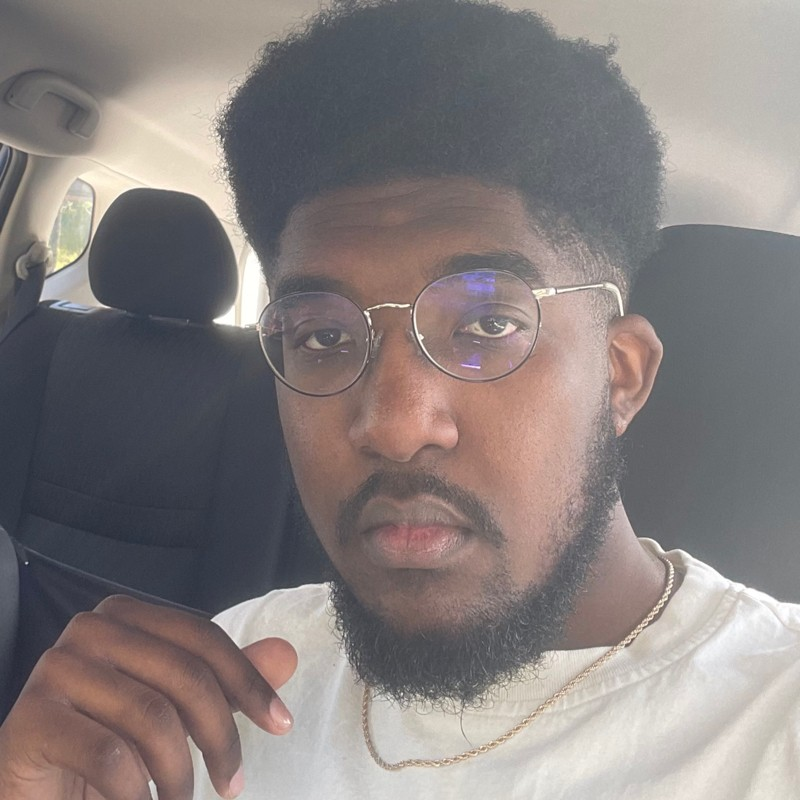

About me:

Hello there! Thank you for stopping by my page. I'm Jay, and I'm an Afro-Latino Game Developer based in Texas, focusing on Systems/Technical Engineering.
I love to forge different types of gameplay systems and make experiences that will always stick with you!
Currently, in college and less than a year away from earning my Bachelor's Degree in Computer Science with a concentration in Software Engineering. Constantly on the move, learning something new
and ever expanding my knowledge is how I spend most of my time. I tend to have a pretty easy time picking up tools and making something with my own personal touch. (Like this webpage I made ;)
Skills:


Hit me up! contact